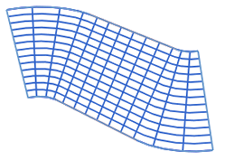
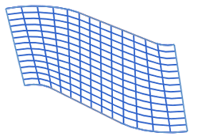
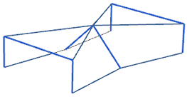
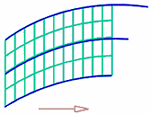
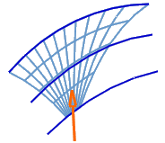
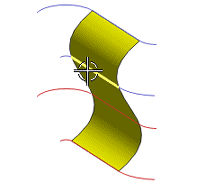

对齐选项
对齐在NX的许多命令中都可以应用。可以用来控制特征是如何从一个截面线扫略到另一个界面线的。下面将列出这些选项，但并不是所有的选项在每个命令中都可用。
参数沿截面线串以相等的圆弧长参数间隔隔开等参数曲线连接点。NX 使用每条曲线的全长。

圆弧长沿定义的曲线以相等的圆弧长间隔隔开等参数曲线连接点。NX 使用每条曲线的全长。

根据点允许您在不同形状的截面线串之间对齐点。NX 将沿截面方向放置对齐点和其对齐线。您可以添加、删除和移动这些点，以保留尖角或细化曲面形状。

距离在指定方向上将点沿每个截面以相等的距离隔开。这样会得到全部位于垂直于指定方向矢量的平面内的等参数曲线。定义的曲线将确定体范围：体继续直到它到达一些曲线的终点为止。

您指定等参数曲线放置的方向。在内部，系统构造与每个定义曲线相交的平面以获取等参数曲线所需的点。
角度在指定轴线周围将点沿每条曲线以相等的角度隔开。这样得到所有在包含有轴线的平面内的等参数曲线。体的范围取决于定义曲线：体继续直到它到达一条定义曲线的终点为止。

脊线将点放置在选定曲线与垂直于输入曲线的平面的相交处。得到的体的范围取决于这条脊线的限制。

注释：全部或部分垂直于定义曲线(截面线串)的脊线是无效的，因为剖切平面与定义曲线间的相交是不存在的或定义不当的。
样条点使用输入曲线的点和相切值生成曲面。新的曲面需要通过定义输入曲线的点，而不是曲线本身。这样更改曲线参数并且生成光顺的曲面。当更改曲线参数时，相切值保持不变。

当您创建“样条点”曲面时，截面线串必须为单个 B 曲线，每条都带有相同数量的定义点。
根据分段与参数对齐方法相似，只是 NX 沿每条曲线段等距隔开等参数曲线，而不是按相同的圆弧长参数间隔隔开。此方法产生的 C0 补片的数量与段数相同。
此方法在每个轮廓均包含相同的段数时有效。